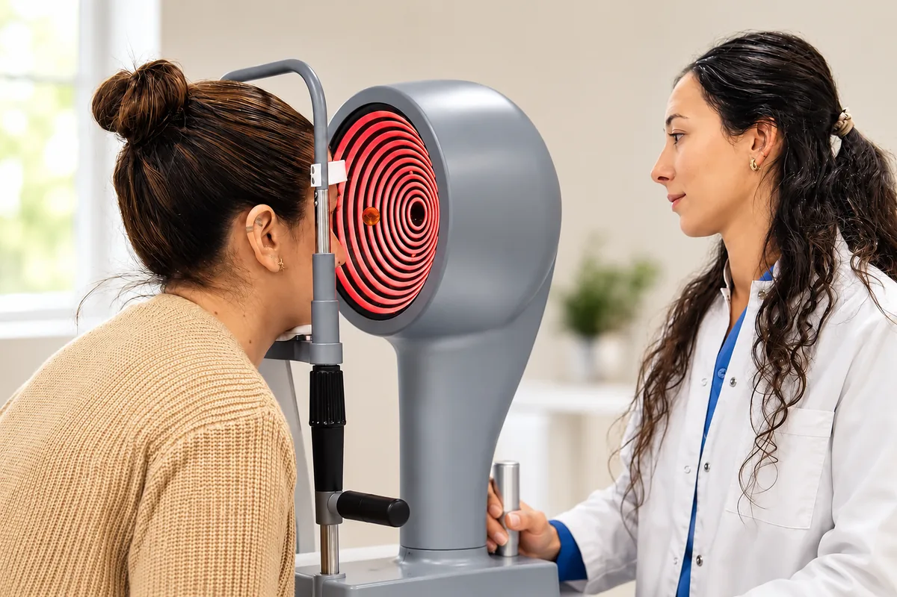

Especialidad
Cataratas, córnea y cirugía refractiva
La subespecialidad que atiende la parte frontal del ojo: desde la catarata hasta la cirugía para dejar los anteojos.
En pocas palabras
Qué es y qué tratamos
El segmento anterior del ojo —córnea, cristalino y cámara anterior— concentra las cirugías más frecuentes de la oftalmología. En el instituto la evalúa y opera un equipo de especialistas con estudios específicos para cada decisión: cuándo operar una catarata, qué lente intraocular elegir o si una persona es candidata a cirugía refractiva.



Preguntas frecuentes
Sobre cataratas, córnea y refractiva
¿Cuándo hay que operar la catarata?
Cuando la disminución de la visión interfiere con la vida diaria: leer, manejar, trabajar. No hay que esperar a que “madure”; el momento lo define el paciente junto con el especialista.
¿La cirugía de cataratas es ambulatoria?
Sí. Se realiza con anestesia local, dura menos de una hora y el paciente vuelve a su casa el mismo día, con controles en los días siguientes.
¿Quién puede operarse con láser para dejar los anteojos?
Personas mayores de edad, con graduación estable y córneas aptas. Los estudios previos —topografía y paquimetría, entre otros— determinan si es seguro.
¿Qué es el queratocono?
Una enfermedad en la que la córnea se adelgaza y se deforma progresivamente. Detectarlo temprano permite tratarlo antes de que afecte la visión de forma importante.
Turnos
Consultá con los especialistas en cataratas, córnea y refractiva
Lunes a viernes de 7:30 a 19:30 en Bv. Chacabuco 879, Nueva Córdoba. Para urgencias, guardia las 24 horas.